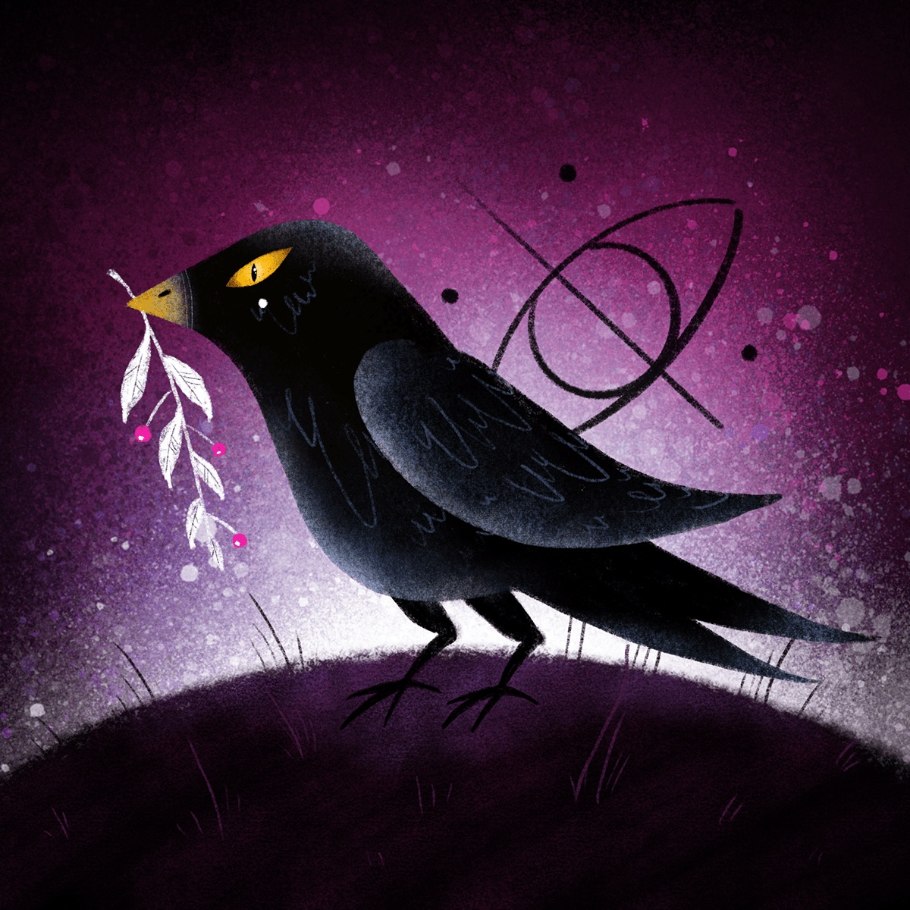
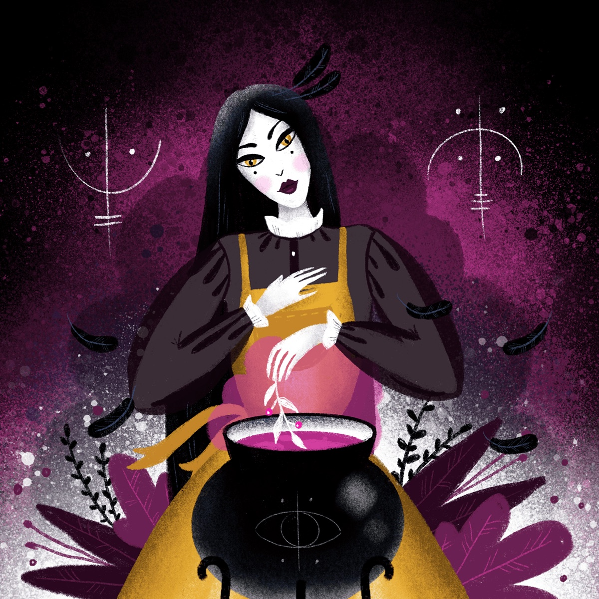
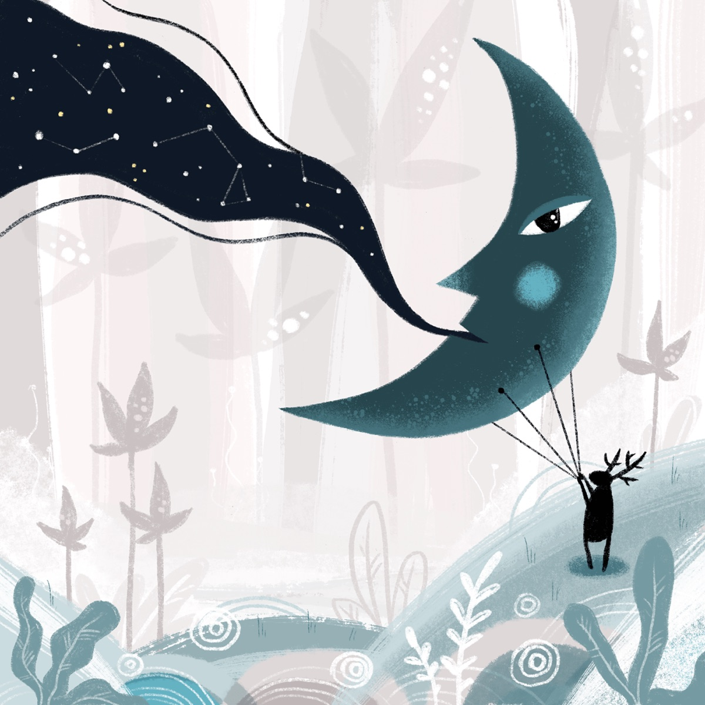
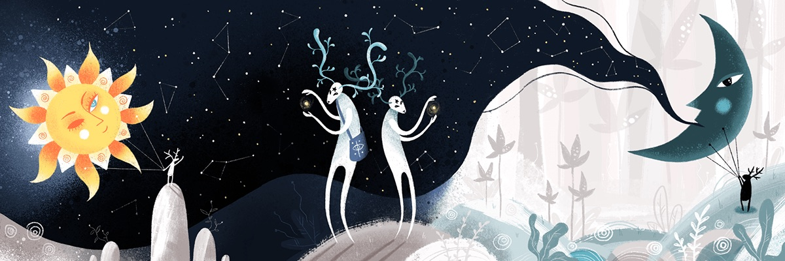
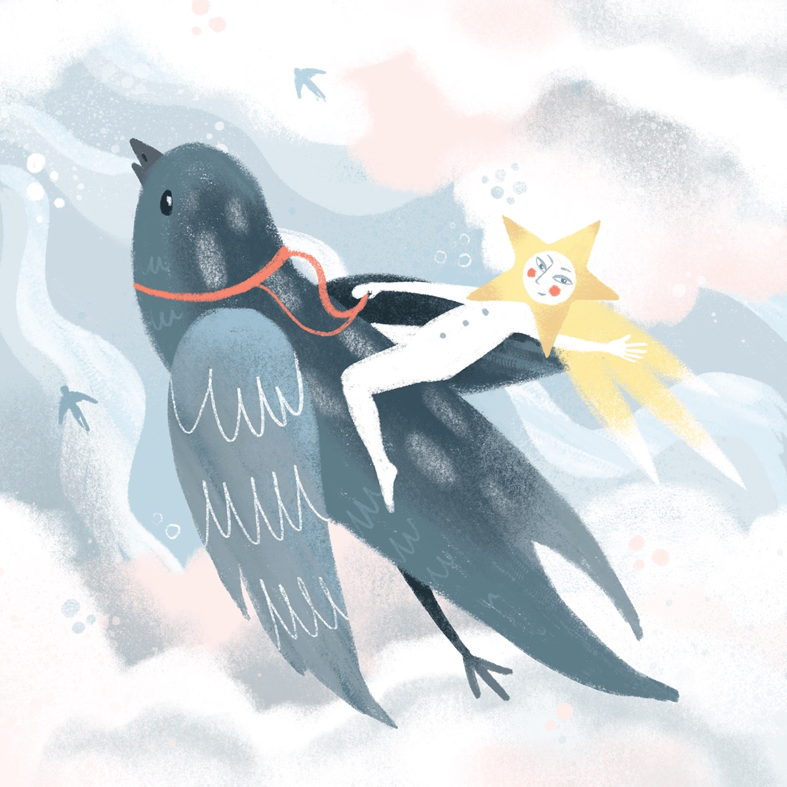
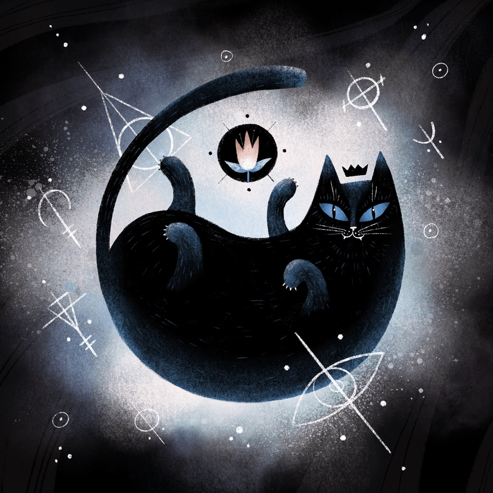

하나
보랏빛 언덕 너머 어딘가에 동굴이 하나 있었어요. 그곳의 새들은 허공에 알 수 없는 무늬를 그리곤 했답니다.
그림과 함께 읽는
네 편의 작은 이야기
첫 번째 책
천천히 넘겨 보세요




01 / 03
보랏빛 언덕 너머 어딘가에 동굴이 하나 있었어요. 그곳의 새들은 허공에 알 수 없는 무늬를 그리곤 했답니다.
보름달이 뜨는 밤이면, 분홍 열매 가지를 부리에 문 검은 새를 만날 수도 있었지요.
그 열매가 있어야만 새는 일 년에 단 한 번, 본래의 모습으로 돌아갈 수 있었어요. 마법에 걸린 새는 아주 많았지만, 모두가 사람이 될 수 있는 건 아니었답니다.

01밤마다 달님은 하늘을 길게 내쉬었어요. 별이 주렁주렁 달린 긴 목도리처럼요.

02뿔 달린 두 하늘지기가 그 뒤를 따라 걸으며, 길 잃은 빛들을 집으로 데려다주었답니다.

03새벽이 오면 가장 작은 하늘지기가 제일 높은 바위에 올라 해님을 깨웠어요.

04그렇게 하늘은 해님에서 달님까지, 긴 숨 한 번에 천천히 한 바퀴를 돌았답니다.
누구에게나 고를 수 있는 길이 있었어요. 그리고 많은 별들이 땅 위의 삶을 골랐답니다.

별들은 들새의 날개를 꼭 붙잡고, 사뿐사뿐 내려왔어요.

울창한 숲속에 작은 집을 짓고 어린 들새들을 길들였지요. 언제든 마음이 머무는 곳으로 돌아갈 수 있도록요.
언뜻 보면 그저 평범한 까만 아기 고양이였어요. 하지만 가까이 들여다보면, 머리 위에 아주 작은 까만 왕관이 얹혀 있었답니다.

…그리고 고양이 마법도 조금.

아기 고양이에게는 주인이 없었어요. 대신 아주 가까운 친구가 하나 있었고, 둘은 정원의 비밀을 모두 나누어 가졌답니다.